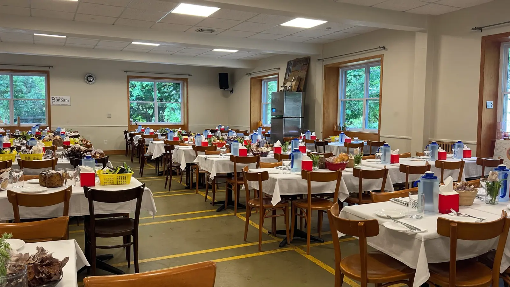

Carrer Tamariu · Empuriabrava
Menú del día con siete u ocho primeros y paella o fideuà de segundo. Raciones generosas y precio de los de siempre.

La casa
Can Felix está en el Carrer Tamariu, 30, en Empuriabrava. Es una casa de menú: de las que llenan a mediodía porque la gente sabe lo que va a encontrar.
Y hay un dato que cuesta de igualar: 2.295 opiniones en Google, con un 4,4 de media. Para hacerse una idea, ningún restaurante de los que hemos mirado en L'Escala llega a la mitad. Eso no lo consigue un sitio de una temporada.
Y la media sigue en 4,4. Mantener la nota con ese volumen es mucho más difícil que tener un 4,8 con veinte opiniones.
En familia
Cómo llegar
En el Carrer Tamariu, en Empuriabrava. Para reservar mesa, mejor llamar.
Llamar ahora Abrir en MapsPreguntas frecuentes
Sí, con siete u ocho primeros a elegir y paella o fideuà de segundo.
Sí. Hay menú infantil y tronas disponibles.
Generosas — es de lo que más se habla en las opiniones, junto con la presentación.
A mediodía en temporada conviene llamar antes, al 972 45 24 56.
En el Carrer Tamariu, 30, en Empuriabrava (Castelló d'Empúries).